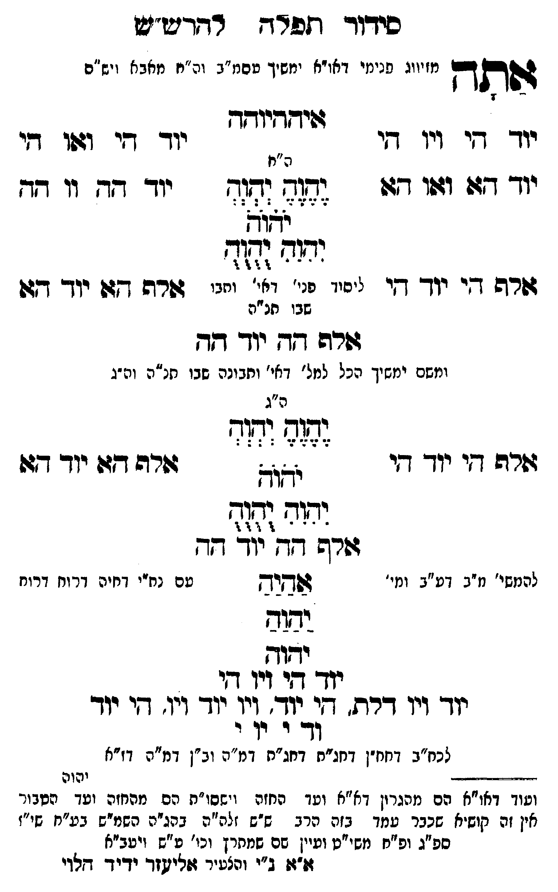

Neue Klartextfassung
אתה [מזיווג פנימי דאו"א ימשך עסמ"ב ונרנח"י דחכמה ויש"ס] איההיוהה === טבלה === [טור ימין] יוד הי ויו הי יוד הא ואו הא אלף הי יוד הי [טור אמצעי] [ה"ח] יֶהֶוֶהֶ יְהְוְהְ יֹהֹוֹהֹ יִהִוִהִ יֻהֻוֻהֻ [ליסוד פני' דאי' ותבו' שבו חו"ח] [טור שמאל] יוד הי ואו הי יוד הה וו הה אלף הא יוד הא === סוף טבלה === אלף הה יוד הה [ומשם ימשיך הכל למל' דאי' ותבונה שבו חו"ח וה"ג] === טבלה === [טור ימין] אלף הי יוד הי [טור אמצעי] [ה"ג] יֶהֶוֶהֶ יְהְוְהְ יֹהֹוֹהֹ יִהִוִהִ יֻהֻוֻהֻ [טור שמאל] אלף הא יוד הא === סוף טבלה === אלף הה יוד הה [להמשי' מ"ב דע"ב ומי' עם נח"י דחיה דרוח דרוח] אַהַיַהַ יַהַוַהַ יהוה יוד הי ויו הי יוד ויו דלת, הי יוד ויו יוד ויו, הי יוד וד י וי י [לכח"ב דחח"ן דחג"ת דחג"ת דמ"ה וב"ן דמ"ה דז"א]
Original gegen neue OCR · Niqqud für Vergleich ausgeblendet
Original
אתה [מזיווגK027-001 פנימי דאו"א ימשך עסמ"ב ונרנח"י דחכמה ויש"ס] איההיוהה === טבלה === [טור ימין]K027-002 יוד היK027-003 ויו היK027-004 יוד הא ואו הא אלף היK027-005 יוד הי [טור אמצעי] [ה"ח] יהוה יהוה יהוה יהוה יהוה [ליסוד פני' דאי' ותבו' שבו חו"ח] [טור שמאל] יוד הי ואו הי יוד הה וו הה אלף הא יוד הא === סוף טבלה === אלף הה יוד הה [ומשםK027-006 ימשיך הכל למל' דאי' ותבונהK027-007 שבו חו"ח וה"ג] === טבלה === [טור ימין] אלף היK027-008 יוד הי [טור אמצעי] [ה"ג] יהוה יהוה יהוה יהוה יהוה [טור שמאל] אלף הא יוד הא === סוף טבלה === אלף הה יוד הה [להמשי'K027-009 מ"ב דע"בK027-010 ומי' עםK027-011 נח"י דחיה ∅K027-012 דרוח דרוח] אהיה יהוה יהוה יוד היK027-013 ויו הי יודK027-014 ויו דלת, הי יוד ויו יוד ויו, הי יוד ודK027-015 י וי י [לכח"בK027-016 דחח"ן דחג"ת דחג"תK027-017 דמ"ה וב"ן דמ"ה דז"א]K027-018
OCR · fehlbar
כידור חזפרדש רדדנו יש ו ודן ז או"א וגזף י ד' ה" ו ח יז גשתדך מזיווגK027-001 פנימי דאו"א ימשיך טסמ"ב וה"ח מאבא וש"ם שיזדיודדK027-002 יוד קיK027-003 ויו די יוך זי וגוו די ה"ח יוך דז: וגוו ד97ו גג( וגג-K027-004 יוד גד. וו דד לדנא דוד ([וד שרה די יוך זי ייניו פג גי. זחניר גורה דזן יוך דגו שבו תנ"ה שרה דדK027-005 יוד זד ומשםK027-006 ימשיך הכל למל' דאי' וחבונהK027-007 שבו חנ"ה וה-ג ה"ג ([זל) ז([זז ר ר ר : ד גרה -י יוך דז זז[ גשרה ד(ףK027-008 יוד דג: ימוד: ([ז7 - 4 :י וו ז שרה דד' נוך דד להמשי'K027-009 מ"ב דט"בK027-010 ומי' דשמוש טםK027-011 נח"י דחיה דרווזK027-012 דרוח ידוב יודו יודך דיK027-013 ויו דזי יוךך זיך דרת. גי יוך'K027-014 ויו יו- (ין. [י יוך דד' - יךK027-015 י לכח"בK027-016 דחח"ן דחג"ח דחג"חK027-017 דמ"ה וב"ן דמ"ה דז"א --דג----- יהוה וטוד דאו"א הם מהגרון דא"א וטך החזה וישסו"ת הם מהחזה ועך הטבור אין זה קוש"א שכבר שמד בזה הרג ש"ש זלה"ה בהג"ה השמ"ש בע"ח שי"ז ספ"ג ופ"ח משי"ט ועיין שם שמתרץ וכי' ע"ש ויטב"א ז"ג: ב"י והצשיר זזרישזד ידיד דזלדיK027-018